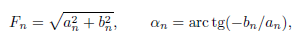
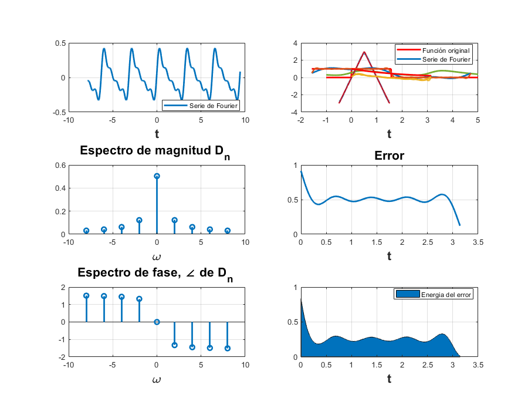

Práctica 5: Series de Fourier en tiempo continuo
Contents
Datos Generales
Luis Enrique Hernandez Lugardo
Silverio Jiménez Cesar Antonio
Objetivos
- Realizar gráficas de series de Fourier exponenciales y trigonométricas en tiempo continuo
- Manipulación de instrucciones en MATLAB
- Calculo númerico de los coeficientes de Fourier
Introducción
Coeficientes de Furier.
Sea
una funcion periodica integrable en el intervalo [0,  ]. Los coeficientes de Fourier de son:
]. Los coeficientes de Fourier de son:
La serie de Fourier de es la siguiente suma formal:
La serie de Fourier de una función periódica s series de Fourier se suelen definir para un conjunto de funciones más general que el de funciones continuas. Recordemos que una función continua a trozos es una función continua salvo quizás en algunos puntos , donde los límites laterales son finitos. Una función continua es un caso particular de esta situación. Las series de Fourier se definen en primer lugar para funciones periódicas.
Casos particulares: Funciones pares o impares Si es par, entonces todos los y la serie de Fourier asociada es.

si es impar, entonces todos los la serie de Fourier asociada es
donde  y se definen del mismo modo que en el caso general.
y se definen del mismo modo que en el caso general.
Variantes en la expresión de las series de Fourier
En algunos campos de la ciencia, por cuestiones de interpretación, interesa escribir las series de Fourier con una expresión distinta a la que hemos presentado aquí. Algunas opciones son las siguientes:
- Los coeficientes de Fourier tambien se puden definir en el interbalo
- El término general de la serie de Fourier se puede escribir como un coseno. En efecto, si consideramos el número complejo y denotamos a su módulo y
 a su argumento,
a su argumento,

utilizando propiedades de las razones trigonometricas y denotando , se obtiene la sigiente expresion para la serie de Fourier:
- Podemos encontrar la serie de Fourier escrita utilizando la exponencial compleja del modo siguiente:
Los coeficientes  se conocen como coeficientes de Fourier
se conocen como coeficientes de Fourier
Ejemplo 6.1
- Ejemplo 6.1 Con serie y espectro trigonometrico, no es necesario entregar el código, solo la aplicación al problema especifico, debe de indicar la función y los valores de sus coeficientes (sin incluir el procedimiento)
SERIE DE FOURIER PARA 4 ARMONICOS
figure(2); ejem1();
C0 = 0.504 C1 = 0.24448 C2 = 0.062877 C3 = 0.015748 C4 = 0.0039375
SERIE DE FOURIER PARA 15 ARMONICOS
figure (3); ejem115();
C0 = 0.504 C1 = 0.24448 C2 = 0.062877 C3 = 0.015748 C4 = 0.0039375 C5 = 0.00098437 C6 = 0.00024609 C7 = 6.1523e-05 C8 = 1.5381e-05 C9 = 3.8452e-06 C10 = 9.613e-07 C11 = 2.4033e-07 C12 = 6.0081e-08 C13 = 1.502e-08 C14 = 3.7551e-09 C15 = 9.3877e-10
Ejemplo 6.2
- Ejemplo 6.2. Con serie y espectro exponencial y A=3, no es necesario entregar el código, solo la aplicación al problema especifico, debe de indicar la función y los valores de sus coeficientes (sin incluir el procedimiento)
SERIE DE FOURIER PARA 4 ARMONICOS
figure(5); Ejemplo_6_2_4();
SERIE DE FOURIER PARA 15 ARMONICOS
figure(6); Ejemplo_6_2_15();
Ejemplo 6.4
- Ejemplo 6.4. Con serie y espectro exponencial, no es necesario entregar el código, solo la aplicación al problema especifico, debe de indicar la función y los valores de sus coeficientes (sin incluir el procedimiento)
SERIE DE FOURIER PARA 4 ARMONICOS
figure(8); Ejem44();

SERIE DE FOURIER PARA 15 ARMONICOS
figure(9); Ejem415();
Ejemplo 6.5
- Ejercicio 6.5. Con serie y espectro exponencial, no es necesario entregar el código, solo la aplicación al problema especifico, debe de indicar la función y los valores de sus coeficientes (sin incluir el procedimiento)
SERIE DE FOURIER PARA 4 ARMONICOS
figure(11);
Ejemplo_6_5_4();
%
 SERIE DE FOURIER PARA 15 ARMONICOS
figure(12);
Ejemplo_6_5_15();
%
Ejemplo 6.7
- Ejemplo 6.7. Con serie y espectro exponencial y sin incluir la gráfica de f, error ni energía del error, no es necesario entregar el código, solo la aplicación al problema especifico, debe de indicar la función y los valores de sus coeficientes (sin incluir el procedimiento)
Serie de Fourier de la función:
Los coeficientes de la serie de Fourier exponencial compleja están dados por:
Para cualquier armónico
SERIE DE FOURIER PARA 4 ARMONICOS
dn=@(n) n/(3*n); sfc7(0,3,dn,1/3,4,-7,7)
SERIE DE FOURIER PARA 15 ARMONICOS
dn=@(n) n/(3*n); sfc7(0,3,dn,1/3,15,-7,7)
Elaboración del código
- Elabore un código similar al COMPUTER EXAMPLE C6.2 que se encuentra al final de la sección 6.2 de Lathi para el Ejempo 6.2 con los datos indicados anteriormente (no utilice inline)
clf x =@(t) exp(-t/2) ; t = [0:0.01:25]; plot(t,x(mod(t,pi))) sumterms = zeros(16, length(t)); sumterms(1,:) = 0.504; for n = 1:size(sumterms,1)-1; sumterms(n+1,:) = 0.504/(1+4*n*j).*exp(2*n*t*j); end x_N = cumsum (sumterms); figure(20); clf; ind = 0; for N = [0,1:2:size(sumterms, 1)-1]; ind = ind+1; subplot (3,3,ind); plot (t,x_N(N+1,:), 'k', t ,x(mod(t,pi))+0j,'r--'); axis ([0 20 -0.2 1.2]); xlabel ('t'); ylabel (['x_{',num2str(N),'} (t)']); end
Warning: Imaginary parts of complex X and/or Y arguments ignored Warning: Imaginary parts of complex X and/or Y arguments ignored Warning: Imaginary parts of complex X and/or Y arguments ignored Warning: Imaginary parts of complex X and/or Y arguments ignored Warning: Imaginary parts of complex X and/or Y arguments ignored Warning: Imaginary parts of complex X and/or Y arguments ignored Warning: Imaginary parts of complex X and/or Y arguments ignored Warning: Imaginary parts of complex X and/or Y arguments ignored

Elaboración del código para el trapecio compuesto
- Elabore un código que implemente el algoritmo de trapecio compuesto para , Utilice este código para aproximar del ejemplo de la práctica. Ahora implemente el código COMPUTER EXAMPLE C6.4 que se encuentra al final de la sección 6.6 de Lathi, y calcule nuevamente el los coeficientes del ejemplo propuesto. Muestre una tabla que contenga los coeficientes mencionados calculados con los dos algoritmos y de forma exacta, ¿Qué algortmo aproxima mejor a los coeficientes?, para esto compare los coefientes con el valor absoluto de la resta.
Los coeficientes de la función: $ son calculados por:
n = 0:15; analitico = 0.504./(1+4*n*j); analitico = analitico';
Se definen los coeficientes a través de la regla del trapecio compuesta
f = @(t) exp(-t/2); trapecio = zeros(16, 1); for in=1:16 trapecio(in) = dntrapecio(0, pi, f, in-1); end
Se definen los coeficientes a través de la transformsda discreta de Fourier (example C6.4)
lathi=C6_4(pi, 512, 15);
Realizamos la comparación:
error_analitico_trapecio = abs( trapecio-analitico ); error_analitico_lathi = abs( lathi-analitico ); table(analitico, trapecio, lathi, error_analitico_trapecio, error_analitico_lathi)
ans =
16×5 table
analitico trapecio lathi error_analitico_trapecio error_analitico_lathi
_____________________ _____________________ _____________________ ________________________ _____________________
0.504+0i 0.5045+0i 0.50469+0i 0.00049557 0.00068593
0.029647+0.11859i 0.02988-0.11865i 0.029798-0.11895i 0.23724 0.23754
0.0077538+0.062031i 0.0079742-0.062065i 0.0077953-0.062229i 0.1241 0.12426
0.0034759+0.04171i 0.0036938-0.041734i 0.0034951-0.041843i 0.083444 0.083553
0.0019611+0.031377i 0.0021782-0.031395i 0.0019724-0.031475i 0.062773 0.062852
0.0012569+0.025137i 0.0014736-0.025151i 0.0012645-0.025212i 0.050289 0.050349
0.00087348+0.020964i 0.00109-0.020976i 0.0008791-0.021023i 0.04194 0.041987
0.00064204+0.017977i 0.00085844-0.017987i 0.00064644-0.018026i 0.035965 0.036003
0.00049171+0.015735i 0.00070803-0.015744i 0.00049532-0.015774i 0.031479 0.031509
0.00038859+0.013989i 0.00060485-0.013997i 0.00039166-0.014021i 0.027987 0.028011
0.0003148+0.012592i 0.00053103-0.0126i 0.00031748-0.012618i 0.025193 0.02521
0.0002602+0.011449i 0.00047639-0.011456i 0.00026259-0.011469i 0.022905 0.022918
0.00021866+0.010495i 0.00043483-0.010502i 0.00022083-0.010511i 0.020998 0.021007
0.00018632+0.0096887i 0.00040248-0.0096947i 0.00018832-0.0097003i 0.019385 0.019389
0.00016066+0.0089971i 0.0003768-0.0090028i 0.00016253-0.0090048i 0.018001 0.018002
0.00013996+0.0083977i 0.00035609-0.008403i 0.00014172-0.0084018i 0.016802 0.016799
Conclusiones
por lo tanto como se puede ver en la tabla el algoritmo del trapecio es mas exacto que el del Lathi porque toma valores muy pequeños. Al igual se puede notar en el error analítico lathi.
Referencias
B. P. Lathi, Linear Systems and Signals, Second Edition, Oxford
University Press, Inc., 2005, segunda edicion, pp. 689.